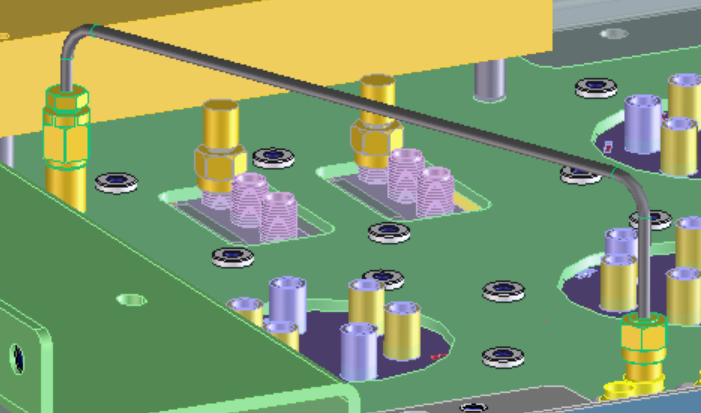
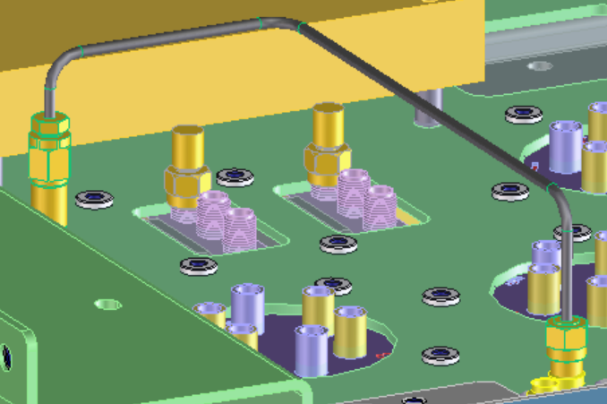
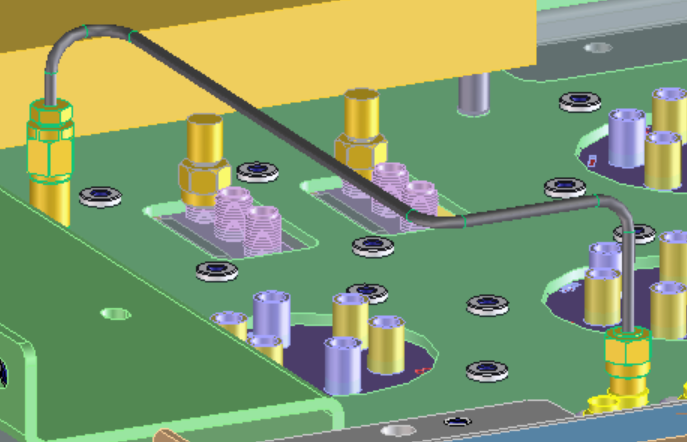

Modeling Extension Module [:MODULE-TITLE](:RCR :resource)
This extension module provides automatic cable routing functionality for the Rigid Cable Advisor.
Automatic routing is performed on one or more routing layers. If multiple layers are provided the router picks the best layer based on smallest estimated cable length and lowest number of bends required.
Routing Components
Direct

The Direct component chooses the shortest (direct) connection between cable start and end.
U or V

The U or V components route the cable along isoparameter lines of the routing layer
U-V-U or V-U-V

The U-V-U or V-U-V components route the cable along two parallel isoparameter lines an connect them via a step"
Getting Started
- [](:Installation :file)
- [](:Customization :file)
- [](:UI :file)